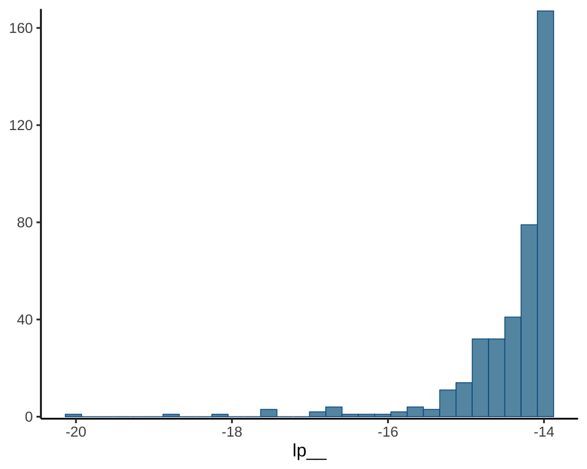
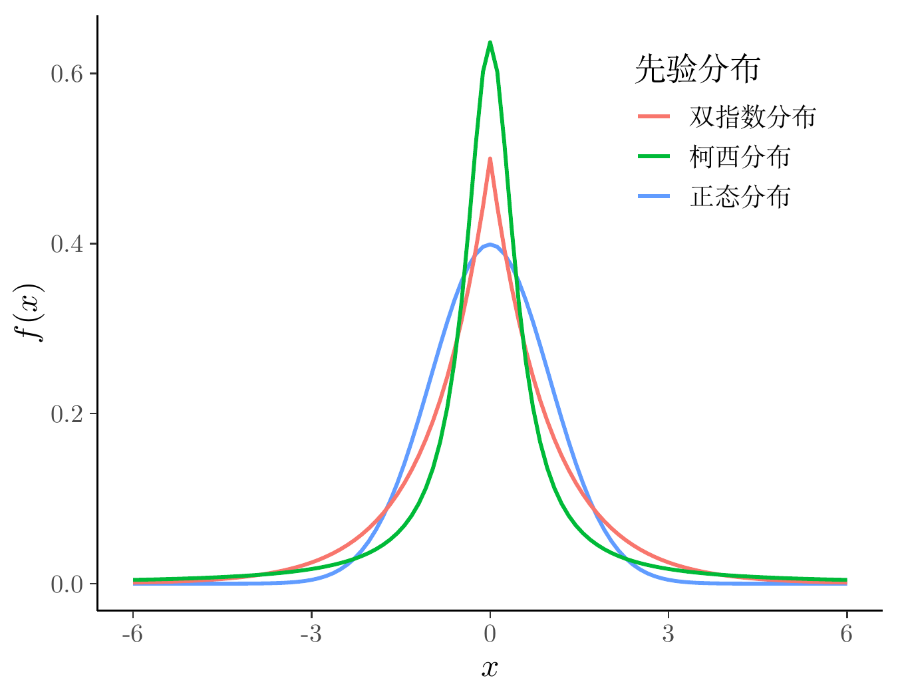
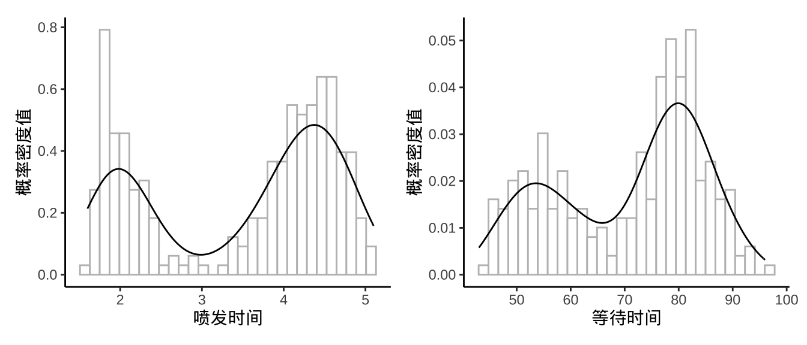

flowchart TB Boost(Boost) --> math(math) Eigen(Eigen) --> math(math) OpenCL(OpenCL) --> math(math) SUNDIALS(SUNDIALS) --> math(math) oneTBB(oneTBB) --> math(math) math(math) --> Stan(Stan) Stan(Stan) --> CmdStan(CmdStan) Stan(Stan) --> RStan(RStan) RStan --> rstanarm(rstanarm) RStan --> brms(brms) RStan --> prophet(prophet) CmdStan --> CmdStanR(CmdStanR) CmdStan --> CmdStanPy(CmdStanPy) CmdStan --> MathematicaStan(MathematicaStan) CmdStanR --> bayesplot(bayesplot) CmdStanR --> loo(loo) CmdStanR --> posterior(posterior) CmdStanR --> projpred(projpred)
33 概率推理框架
\[ \def\bm#1{{\boldsymbol #1}} \]
本章的目的是让读者快速熟悉和上手，主要分为以下几个部分。
- Stan 的概览，介绍 Stan 是什么，怎么样。
- Stan 的入门，以推理一个正态分布均值参数为例，从基础语法、类型声明和代码结构三个方面介绍 Stan 的使用。
- 选择先验分布，先验分布在贝叶斯推理中的重要性不言而喻，本节以一个简单的广义线性模型为例，介绍常见的几个先验分布对模型的影响。
- 选择推理算法，接上一节的例子，围绕怎么用、效果如何介绍 Stan 内置的几个推理算法。
33.1 Stan 概览
Stan 是一个贝叶斯统计建模和计算的概率推理框架，也是一门用于贝叶斯推断和优化的概率编程语言 (Gelman, Lee, 和 Guo 2015; Carpenter 等 2017)。它使用汉密尔顿蒙特卡罗算法（Hamiltonian Monte Carlo algorithm ，简称 HMC 算法）抽样，内置一种可以自适应调整采样步长的 No-U-Turn sampler （简称 NUTS 采样器） 。Stan 还提供自动微分变分推断（Automatic Differentiation Variational Inference algorithm 简称 ADVI 算法）算法做近似贝叶斯推断获取参数的后验分布，以及拟牛顿法（the limited memory Broyden-Fletcher-Goldfarb-Shanno algorithm 简称 L-BFGS 算法）优化算法获取参数的惩罚极大似然估计。
经过 10 多年的发展，Stan 已经形成一个相对成熟的生态，它提供统计建模、数据分析和预测能力，广泛应用于社会、生物、物理、工程、商业等领域，在学术界和工业界的影响力也不小。下 图 33.1 是 Stan 生态中各组件依赖架构图，math 库(Carpenter 等 2015)是 Stan 框架最核心的组件，它基于 Boost 、Eigen 、OpenCL 、SUNDIALS 和 oneTBB 等诸多 C++ 库，提供概率推理、自动微分、矩阵计算、并行计算、GPU 计算和求解代数微分方程等功能。
CmdStan 是 Stan 的命令行接口，可在 MacOS / Linux 的终端软件，Windows 的命令行窗口或 PowerShell 软件中使用。CmdStanR (Gabry, Češnovar, 和 Johnson 2023)、CmdStanPy 和 MathematicaStan 分别是 CmdStan 的 R 语言、Python 语言和 Mathematica 语言接口。每次当 Stan 发布新版本时，CmdStan 也会随之发布新版，只需指定新的 CmdStan 安装路径，CmdStanR 就可以使用上，CmdStanR 包与 Stan 是相互独立的更新机制。 CmdStanR 负责处理 CmdStan 运行的结果，而编译代码，生成模型和模拟采样等都是由 CmdStan 完成。入门 CmdStanR 后，可以快速转入对 Stan 底层原理的学习，有利于编码符合实际需要的复杂模型，有利于掌握常用的炼丹技巧，提高科研和工作的效率。
此外，bayesplot 包 (Gabry 等 2019) 针对 cmdstanr 包生成的拟合模型对象提供一系列可视化图形，用于诊断采样过程、展示后验分布等。loo 包(Vehtari, Gelman, 和 Gabry 2017)计算 LOOIC （留一交叉验证信息准则）和 WAIC （通用信息准则）等指标，用于模型评估与比较。posterior 包 (Vehtari 等 2021) 对采样数据提供统一的操作方法和类型转化，计算常用的后验分布的统计量等。projpred 包 (Piironen 和 Vehtari 2017a; Piironen, Paasiniemi, 和 Vehtari 2020) 实现投影预测推断用于模型预测和特征选择。
rstan 包(Stan Development Team 2023a)是 Stan 的 R 语言接口，该接口依赖 Rcpp (Eddelbuettel 和 François 2011; Eddelbuettel 和 Balamuta 2018)、RcppEigen (Bates 和 Eddelbuettel 2013)、BH (Eddelbuettel, Emerson, 和 Kane 2023)、RcppParallel (Allaire 等 2023)和 StanHeaders (Stan Development Team 2023b)等 R 包，由于存在众多上游 R 包依赖和兼容性问题，尤其在 Windows 系统环境中，因此，RStan 的安装、更新都比较麻烦。RStan 的更新通常严重滞后于 Stan 的更新，不利于及时地使用最新的学术研究成果。 而相比于 rstan 包，CmdStanR 更加轻量，可以更快地将 CmdStan 的新功能融入进来，而且 cmdstanr 和 CmdStan 是分离的，方便用户升级和维护。
rstanarm (Goodrich 等 2023) 和 brms (Bürkner 2017) 是 RStan 的扩展包，各自提供了一套用于表示统计模型的公式语法。它们都支持丰富的统计模型，比如线性模型、广义线性模型、线性混合效应模型、广义线性混合效应模型等。相比于 rstan， 它们使用起来更加方便，因为它内置了大量统计模型的 Stan 实现，即将公式语法翻译成 Stan 编码的模型，然后调用 rstan 或 cmdstanr 翻译成 C++，最后编译成动态链接库。除了依赖 rstan 包，rstanarm 和 brms 还依赖大量其它 R 包。
顺便一提，类似的用于概率推理和统计分析的框架，还有 Python 社区的 PyMC (Abril-Pla O 2023)和 TensorFlow Probability (Joshua V. Dillon 2017)，它们采用的 MCMC 采样算法也是基于 NUTS 的 HMC 算法。
33.2 Stan 入门
33.2.1 Stan 的基础语法
下面以一个简单示例介绍 Stan 的用法，包括 Stan 的基本用法、变量类型、代码结构等，
考虑一个已知方差的正态分布，设 \(-3, -2, -1, 0, 1, 2, 3\) 是取自正态分布 \(\mathcal{N}(\mu,1)\) 的一个样本，也是取自该正态分布的一组随机数。现在的问题是估计该正态分布的均值参数 \(\mu\) 。Stan 编码的正态分布模型如下：
transformed data代码块是一组已知的数据，这部分数据是不需要从外部传递进来的。这个样本是以向量存储的，需要声明向量的长度和类型（默认类型是实数），每一行以分号结尾，这与 C++ 的语法一样。parameters代码块是未知的参数，需要声明各个参数的类型。这里只有一个参数，且只是一个未知的实数，声明类型即可。model代码块是抽样语句表示的模型结构，符号~表示服从的意思，函数y ~ normal(mu, 1)是正态分布的抽样语句。
接下来，编译 Stan 代码，准备参数初值，配置采样的参数。首先加载 cmdstanr 包，设置 2 条迭代链，给每条链设置相同的参数初始值。代码编译后，生成一个模型对象 mod_gaussian，接着，调用方法 sample() ，传递迭代初值 init，初始化阶段的迭代次数 iter_warmup ，采样阶段的迭代次数 iter_sampling，采样的链条数 chains 及并行时 分配的 CPU 核心数 parallel_chains ，随机数种子 seed 。
library(cmdstanr)
nchains <- 2 # 2 条迭代链
# 给每条链设置相同的参数初始值
inits_data_gaussian <- lapply(1:nchains, function(i) {
list(
mu = 1
)
})
fit_gaussian <- mod_gaussian$sample(
init = inits_data_gaussian, # 迭代初值
iter_warmup = 200, # 每条链初始化迭代次数
iter_sampling = 200, # 每条链采样迭代次数
chains = nchains, # 马尔科夫链的数目
parallel_chains = nchains,# 指定 CPU 核心数，可以给每条链分配一个
seed = 20232023 # 设置随机数种子，不要使用 set.seed() 函数
)#> Running MCMC with 2 parallel chains...
#>
#> Chain 1 Iteration: 1 / 400 [ 0%] (Warmup)
#> Chain 1 Iteration: 100 / 400 [ 25%] (Warmup)
#> Chain 1 Iteration: 200 / 400 [ 50%] (Warmup)
#> Chain 1 Iteration: 201 / 400 [ 50%] (Sampling)
#> Chain 1 Iteration: 300 / 400 [ 75%] (Sampling)
#> Chain 1 Iteration: 400 / 400 [100%] (Sampling)
#> Chain 2 Iteration: 1 / 400 [ 0%] (Warmup)
#> Chain 2 Iteration: 100 / 400 [ 25%] (Warmup)
#> Chain 2 Iteration: 200 / 400 [ 50%] (Warmup)
#> Chain 2 Iteration: 201 / 400 [ 50%] (Sampling)
#> Chain 2 Iteration: 300 / 400 [ 75%] (Sampling)
#> Chain 2 Iteration: 400 / 400 [100%] (Sampling)
#> Chain 1 finished in 0.0 seconds.
#> Chain 2 finished in 0.0 seconds.
#>
#> Both chains finished successfully.
#> Mean chain execution time: 0.0 seconds.
#> Total execution time: 0.3 seconds.默认情况下，采样过程中会输出一些信息，以上是 2 条链并行采样的过程，给出百分比进度及时间消耗。采样完成后，调用方法 summary() 汇总和展示采样结果。
#> # A tibble: 2 × 10
#> variable mean median sd mad q5 q95 rhat ess_bulk ess_tail
#> <chr> <dbl> <dbl> <dbl> <dbl> <dbl> <dbl> <dbl> <dbl> <dbl>
#> 1 lp__ -14.4 -14.2 0.708 0.212 -15.6 -14.0 1.01 177. 220.
#> 2 mu 0.0365 0.0307 0.348 0.298 -0.511 0.572 1.01 229. 173.输出模型中各个参数的后验分布的一些统计量，如均值（mean）、中位数（median）、标准差（sd），0.05 分位点（q5），0.95 分位点（q95）等。此外，还有 lp__ 后验对数概率密度值，每个模型都会有该值。summary() 方法有一些参数可以控制数字的显示方式和精度。下面展示的是保留 4 位有效数字的结果。
#> # A tibble: 2 × 10
#> variable mean median sd mad q5 q95 rhat ess_bulk
#> <chr> <dbl> <dbl> <dbl> <dbl> <dbl> <dbl> <dbl> <dbl>
#> 1 lp__ -14.43 -14.15 0.7083 0.2118 -15.60 -14.00 1.007 177.2
#> 2 mu 0.03647 0.03073 0.3476 0.2978 -0.5115 0.5722 1.007 229.0
#> # ℹ 1 more variable: ess_tail <dbl>接下来，要介绍 Stan 代码中的保留字 target 的含义，因为它在 Stan 代码中很常见，与输出结果中的 lp__ 一行紧密相关。
-
lp__表示后验概率密度函数的对数。 - target 累加一些和参数无关的数不影响参数的估计，但影响
lp__的值。 - 抽样语句表示模型会扔掉后验概率密度函数的对数的常数项。

为此，不妨在之前的 Stan 代码的基础上添加两行，新的 Stan 代码如下：
接着，再次编译代码、采样，为了节约篇幅，设置两个参数 show_messages 和 refresh ，不显示中间过程和采样进度。其它参数设置不变，代码如下：
fit_gaussian <- mod_gaussian_target$sample(
init = inits_data_gaussian,
iter_warmup = 200,
iter_sampling = 200,
chains = nchains,
parallel_chains = nchains,
show_messages = FALSE, # 不显示中间过程
refresh = 0, # 不显示采样进度
seed = 20232023
)
fit_gaussian$summary(.num_args = list(sigfig = 4, notation = "dec"))#> # A tibble: 2 × 10
#> variable mean median sd mad q5 q95 rhat
#> <chr> <dbl> <dbl> <dbl> <dbl> <dbl> <dbl> <dbl>
#> 1 lp__ 12335. 12335. 0.7074 0.1483 12334. 12336. 1.008
#> 2 mu 0.03647 0.03073 0.3476 0.2978 -0.5115 0.5722 1.007
#> # ℹ 2 more variables: ess_bulk <dbl>, ess_tail <dbl>可以清楚地看到 lp__ 的值发生了变化，而参数 mu 的值没有变化。这是因为抽样语句 y ~ normal(mu, 1); 隐含一个 lp__ ，target 指代 lp__ 的值，符号 += 表示累加。两次累加后得到 12335.09。
下面从概率密度函数出发，用 R 语言来计算逐点对数似然函数值。一般地，不妨设 \(x_1,x_2,\cdots,x_n\) 是来自正态总体 \(\mathcal{N}(\mu,1)\) 的一个样本。则正态分布的概率密度函数 \(f(x)\) 的对数如下：
\[ \log f(x) = \log \frac{1}{\sqrt{2\pi}} - \frac{(x - \mu)^2}{2} \]
已知参数 \(\mu\) 是一个非常接近 0 的数，不妨将 \(\mu = 0\) 代入计算。
去掉常数项后，计算概率密度函数值的对数和。
这就比较接近原 lp__ 的值了，所以，lp__ 表示后验概率密度函数的对数，扔掉了与参数无关的常数项。若以概率密度函数的对数 normal_lpdf 替代抽样语句，则常数项是保留的。normal_lpdf 是 Stan 内置的函数，输入值为随机变量的取值 y 、位置参数 mu 和尺度参数 sigma，返回值为 real 实数。
real normal_lpdf(reals y | reals mu, reals sigma)
接着，编译上述代码以及重复采样的步骤，参数设置也一样。
fit_gaussian <- mod_gaussian_lpdf$sample(
init = inits_data_gaussian,
iter_warmup = 200,
iter_sampling = 200,
chains = nchains,
parallel_chains = nchains,
show_messages = FALSE,
refresh = 0,
seed = 20232023
)
fit_gaussian$summary(.num_args = list(sigfig = 4, notation = "dec"))#> # A tibble: 2 × 10
#> variable mean median sd mad q5 q95 rhat ess_bulk
#> <chr> <dbl> <dbl> <dbl> <dbl> <dbl> <dbl> <dbl> <dbl>
#> 1 lp__ -20.86 -20.58 0.7083 0.2119 -22.03 -20.43 1.007 176.7
#> 2 mu 0.03647 0.03073 0.3476 0.2978 -0.5115 0.5722 1.007 229.0
#> # ℹ 1 more variable: ess_tail <dbl>可以看到，此时 lp__ 的值包含常数项，两种表示方式对参数的计算结果没有影响。
33.2.2 Stan 的变量类型
Stan 语言和 C/C++ 语言比较类似，变量需要先声明再使用，函数需要用 return 返回值，总而言之，类型声明比较严格。变量的声明没有太多的内涵，就是 C++ 和 Stan 定义的语法，比如整型用 int 声明。建模过程中，时常需要将 R 语言环境中的数据传递给 Stan 代码编译出来的模型，而 Stan 是基于 C++ 语言，在变量类型方面有继承有发展。下表给出 Stan 与 R 语言中的变量类型对应关系。值得注意， R 语言的类型检查是不严格的，使用变量也不需要提前声明和初始化。Stan 语言中向量、矩阵的类型都是实数，下标也从 1 开始，元组类型和 R 语言中的列表类似，所有向量默认都是列向量。
下表第一列表示 Stan 语言的变量类型，第二列给出使用该变量的声明示例，第三列给出 R 语言中构造该类型变量的示例。
| 类型 | Stan 语言 | R 语言 |
|---|---|---|
| 整型 | int x = 1; |
x = 1L |
| 实数 | real x = 3.14; |
x = 3.14 |
| 向量 | vector[3] x = [1, 2, 3]'; |
x = c(1, 2, 3) |
| 矩阵 | matrix[3,1] x; |
matrix(data = c(1, 2, 3), nrow = 3) |
| 数组 | array[3] int x; |
array(data = c(1L, 2L, 3L), dim = c(3, 1, 1)) |
| 元组 | tuple(vector[3],vector[3]) x; |
list(x = c(1, 2, 3), y = c(4, 5, 6)) |
33.2.3 Stan 的代码结构
Stan 代码文件最多有如下 7 块内容，模拟、拟合和预测模型会用到其中的一部分或全部。
functions {
// ... function declarations and definitions ...
}
data {
// ... declarations ...
}
transformed data {
// ... declarations ... statements ...
}
parameters {
// ... declarations ...
}
transformed parameters {
// ... declarations ... statements ...
}
model {
// ... declarations ... statements ...
}
generated quantities {
// ... declarations ... statements ...
}33.2.4 Stan 的函数使用
Stan 有大量的内建函数，然而，有时候，Stan 内建的函数不足以满足需求，需要自己创建函数。下面以函数 cholesky_decompose 为例介绍 Stan 内置/一般函数的调用，在该函数的基础上自定义函数 cholesky_decompose2 ，这不过是对它改个名字，其它内容只要符合 Stan 语言即可，不甚重要。
根据 Stan 官网函数 cholesky_decompose 帮助文档，Cholesky 分解的形式（Cholesky 分解有多种形式）如下：
\[ M = LL^{\top} \]
\(M\) 是一个对称正定的矩阵，而 \(L\) 是一个下三角矩阵。函数 cholesky_decompose 有一个参数 A， A 需要传递一个对称正定的矩阵。不妨设这个对称正定的矩阵为
\[ M = \begin{bmatrix} 4 & 1 \\ 1 & 1 \end{bmatrix} \]
接着，将以上 Stan 代码编译
准备测试数据，只要是一个对称正定的矩阵都可以做 cholesky 分解。
cmdstanr 包导出函数的方法将以上 Stan 代码中的函数部分独立导出。
现在，可以直接调用导出的函数 cholesky_decompose2 。
#> [,1] [,2]
#> [1,] 2.0 0.0000000
#> [2,] 0.5 0.8660254最后，将 Stan 函数计算的结果与 R 语言内置的 cholesky 分解函数的结果比较。发现，函数 chol() 的结果正好是 cholesky_decompose2 的转置。
查看帮助文档，可知 R 软件对 Cholesky 分解的定义如下：
\[ M = L^{\top}L \]
根据数学表达式，感觉上都是差不多的，但还是有差异。R 与 Stan 混合编程就需要注意这些表达上不同的，不然，排错会很麻烦。
33.3 先验分布
考虑一个响应变量服从伯努利分布的广义线性模型。
\[ \begin{aligned} &\boldsymbol{y} \sim \mathrm{Bernoulli}(\boldsymbol{p}) \\ &\mathrm{logit}(\boldsymbol{p}) = \log (\frac{\boldsymbol{p}}{1-\boldsymbol{p}})= \alpha + X \boldsymbol{\beta} \end{aligned} \]
下面模拟生成 2500 个样本，其中 10 个正态协变量，非 0 的回归系数是截距 \(\alpha = 1\) 和向量 \(\boldsymbol{\beta}\) 中的 \(\beta_1 = 3,\beta_2 = -2\) 。对模型实际有用的是 3 个变量，采用贝叶斯建模，其它变量应该被收缩掉。贝叶斯收缩 （Bayesian shrinkage）与变量选择 （Variable selection） 是有关系的，先验分布影响收缩的力度。
在贝叶斯先验分布中，有几个常用的概率分布，分别是正态分布、拉普拉斯分布（双指数分布）、柯西分布，下图集中展示了这几个的标准分布。
代码
dlaplace <- function(x, mu = 0, sigma = 1) {
1 / (2*sigma) * exp(- abs(x - mu) / sigma)
}
ggplot() +
geom_function(
fun = dnorm, args = list(mean = 0, sd = 1),
aes(colour = "正态分布"), linewidth = 1.2, xlim = c(-6, 6)
) +
geom_function(
fun = dlaplace, args = list(mu = 0, sigma = 1),
aes(colour = "双指数分布"), linewidth = 1.2, xlim = c(-6, 6)
) +
geom_function(
fun = dcauchy, args = list(location = 0, scale = 0.5),
aes(colour = "柯西分布"), linewidth = 1.2, xlim = c(-6, 6)
) +
theme_classic() +
theme(legend.position = c(0.8, 0.8)) +
labs(x = "$x$", y = "$f(x)$", colour = "先验分布")

接下来，考虑几种常见的先验设置。
33.3.1 正态先验
指定回归系数 \(\alpha,\beta\) 的先验分布如下
\[ \begin{aligned} \alpha &\sim \mathcal{N}(0, 1000) \\ \beta &\sim \mathcal{N}(0, 1000) \end{aligned} \]
正态分布中设置相当大的方差意味着分布相当扁平， \(\alpha,\beta\) 的取值在区间 \((-\infty,+\infty)\) 上比较均匀。
data {
int<lower=1> k;
int<lower=0> n;
matrix[n, k] X;
array[n] int<lower=0, upper=1> y;
}
parameters {
vector[k] beta;
real alpha;
}
model {
target += normal_lpdf(beta | 0, 1000);
target += normal_lpdf(alpha | 0, 1000);
target += bernoulli_logit_glm_lpmf(y | X, alpha, beta);
}
generated quantities {
vector[n] log_lik;
for (i in 1 : n) {
log_lik[i] = bernoulli_logit_lpmf(y[i] | alpha + X[i] * beta);
}
}mod_logit_normal <- cmdstan_model(
stan_file = "code/bernoulli_logit_glm_normal.stan",
compile = TRUE, cpp_options = list(stan_threads = TRUE)
)
fit_logit_normal <- mod_logit_normal$sample(
data = mdata,
chains = 2,
parallel_chains = 2,
iter_warmup = 1000,
iter_sampling = 1000,
threads_per_chain = 2,
seed = 20232023,
show_messages = FALSE,
refresh = 0
)
# 输出结果
fit_logit_normal$summary(c("alpha", "beta", "lp__"))#> # A tibble: 12 × 10
#> variable mean median sd mad q5 q95 rhat ess_bulk
#> <chr> <dbl> <dbl> <dbl> <dbl> <dbl> <dbl> <dbl> <dbl>
#> 1 alpha 1.02 1.02 0.0715 0.0728 0.899 1.13e+0 1.00 3082.
#> 2 beta[1] 3.14 3.13 0.133 0.135 2.93 3.36e+0 1.00 2103.
#> 3 beta[2] -2.02 -2.02 0.0985 0.0999 -2.19 -1.86e+0 1.00 2192.
#> 4 beta[3] 0.0590 0.0586 0.0641 0.0644 -0.0456 1.65e-1 1.00 4654.
#> 5 beta[4] -0.0270 -0.0252 0.0669 0.0640 -0.140 8.03e-2 1.00 4460.
#> 6 beta[5] 0.0122 0.0130 0.0682 0.0691 -0.100 1.25e-1 1.00 4532.
#> 7 beta[6] 0.0220 0.0205 0.0697 0.0683 -0.0938 1.36e-1 1.00 4304.
#> 8 beta[7] 0.103 0.102 0.0629 0.0619 0.00356 2.06e-1 0.999 4095.
#> 9 beta[8] -0.0297 -0.0303 0.0667 0.0663 -0.143 7.91e-2 1.00 3671.
#> 10 beta[9] -0.0870 -0.0856 0.0635 0.0615 -0.193 1.54e-2 1.00 4099.
#> 11 beta[10] 0.0818 0.0831 0.0639 0.0679 -0.0239 1.86e-1 1.00 4417.
#> 12 lp__ -843. -842. 2.41 2.23 -847. -8.39e+2 1.00 760.
#> # ℹ 1 more variable: ess_tail <dbl>33.3.2 Lasso 先验
指定回归系数 \(\alpha,\beta\) 的先验分布如下
\[ \begin{aligned} \lambda &\sim \mathrm{Half\_Cauchy}(0,0.01) \\ \alpha &\sim \mathrm{Double\_exponential}(0, \lambda) \\ \beta &\sim \mathrm{Double\_exponential}(0, \lambda) \end{aligned} \]
其中， \(\alpha,\beta\) 服从双指数分布，惩罚因子 \(\lambda\) 服从柯西分布。顺便一提，若把双指数分布改为正态分布，则 Lasso 先验变为岭先验。相比于岭先验，Lasso 先验有意将回归系数往 0 上收缩，这非常类似于频率派中的岭回归与 Lasso 回归的关系 (Bhadra 等 2019)。
data {
int<lower=1> k;
int<lower=0> n;
matrix[n, k] X;
array[n] int<lower=0, upper=1> y;
}
parameters {
vector[k] beta;
real alpha;
real<lower=0> lambda;
}
model {
target += double_exponential_lpdf(beta | 0, lambda);
target += double_exponential_lpdf(alpha | 0, lambda);
target += cauchy_lpdf(lambda | 0, 0.01);
target += bernoulli_logit_glm_lpmf(y | X, alpha, beta);
}
generated quantities {
vector[n] log_lik;
for (i in 1 : n) {
log_lik[i] = bernoulli_logit_lpmf(y[i] | alpha + X[i] * beta);
}
}mod_logit_lasso <- cmdstan_model(
stan_file = "code/bernoulli_logit_glm_lasso.stan",
compile = TRUE, cpp_options = list(stan_threads = TRUE)
)
fit_logit_lasso <- mod_logit_lasso$sample(
data = mdata,
chains = 2,
parallel_chains = 2,
iter_warmup = 1000,
iter_sampling = 1000,
threads_per_chain = 2,
seed = 20232023,
show_messages = FALSE,
refresh = 0
)
# 输出结果
fit_logit_lasso$summary(c("alpha", "beta", "lambda", "lp__"))#> # A tibble: 13 × 10
#> variable mean median sd mad q5 q95 rhat ess_bulk
#> <chr> <dbl> <dbl> <dbl> <dbl> <dbl> <dbl> <dbl> <dbl>
#> 1 alpha 0.993 0.989 0.0738 0.0741 0.873 1.12e+0 1.00 2427.
#> 2 beta[1] 3.08 3.08 0.137 0.133 2.86 3.31e+0 1.00 1707.
#> 3 beta[2] -1.99 -1.98 0.100 0.102 -2.15 -1.82e+0 1.00 2014.
#> 4 beta[3] 0.0533 0.0517 0.0614 0.0586 -0.0463 1.60e-1 1.00 4035.
#> 5 beta[4] -0.0232 -0.0222 0.0600 0.0571 -0.121 7.16e-2 1.00 4184.
#> 6 beta[5] 0.0118 0.0128 0.0628 0.0602 -0.0959 1.15e-1 1.00 5750.
#> 7 beta[6] 0.0180 0.0163 0.0612 0.0603 -0.0810 1.23e-1 1.00 4271.
#> 8 beta[7] 0.0942 0.0940 0.0615 0.0607 -0.00725 1.95e-1 1.00 3869.
#> 9 beta[8] -0.0268 -0.0252 0.0607 0.0612 -0.125 7.30e-2 1.00 3632.
#> 10 beta[9] -0.0815 -0.0817 0.0603 0.0589 -0.182 1.73e-2 1.00 3377.
#> 11 beta[10] 0.0747 0.0742 0.0637 0.0605 -0.0305 1.80e-1 1.00 3815.
#> 12 lambda 0.598 0.566 0.189 0.153 0.361 9.32e-1 1.00 3142.
#> 13 lp__ -775. -775. 2.58 2.42 -780. -7.71e+2 1.00 829.
#> # ℹ 1 more variable: ess_tail <dbl>计算 LOO-CV 比较正态先验和 Lasso 先验
fit_logit_normal_loo <- fit_logit_normal$loo(variables = "log_lik", cores = 1)
print(fit_logit_normal_loo)#>
#> Computed from 2000 by 2500 log-likelihood matrix
#>
#> Estimate SE
#> elpd_loo -762.3 27.2
#> p_loo 11.3 0.5
#> looic 1524.6 54.5
#> ------
#> Monte Carlo SE of elpd_loo is 0.1.
#>
#> All Pareto k estimates are good (k < 0.5).
#> See help('pareto-k-diagnostic') for details.fit_logit_lasso_loo <- fit_logit_lasso$loo(variables = "log_lik", cores = 1)
print(fit_logit_lasso_loo)#>
#> Computed from 2000 by 2500 log-likelihood matrix
#>
#> Estimate SE
#> elpd_loo -761.5 26.8
#> p_loo 10.3 0.5
#> looic 1522.9 53.6
#> ------
#> Monte Carlo SE of elpd_loo is 0.1.
#>
#> All Pareto k estimates are good (k < 0.5).
#> See help('pareto-k-diagnostic') for details.loo 包的函数 loo_compare() 比较两个模型
#> elpd_diff se_diff
#> model1 0.0 0.0
#> model0 -0.9 0.5输出结果中最好的模型放在第一行。LOOIC 越小越好，所以，Lasso 先验更好。
33.3.3 Horseshoe 先验
Horseshoe 先验（Horse shoe）(Piironen 和 Vehtari 2017b) 指定回归系数 \(\alpha,\bm{\beta}\) 的先验分布如下
\[ \begin{aligned} \lambda_i &\sim \mathrm{Half\_Cauchy}(0,1) \\ \alpha | \lambda_0,\tau &\sim \mathcal{N}(0, \tau^2\lambda_0^2) \\ \beta_i | \lambda_i,\tau &\sim \mathcal{N}(0, \tau^2\lambda_i^2),\quad i = 1,2,\cdots,10 \end{aligned} \]
其中，\(\tau\) 称之为全局超参数，它将所有的回归系数朝着 0 收缩。而作用在局部超参数 \(\lambda_i\) 上的重尾柯西先验允许某些回归系数逃脱收缩。
data {
int<lower=1> k;
int<lower=0> n;
matrix[n, k] X;
array[n] int<lower=0, upper=1> y;
}
parameters {
vector[k] beta_tilde;
real alpha;
real<lower=0> tau;
vector<lower=0>[k] lambda;
}
transformed parameters {
vector[k] beta = beta_tilde .* lambda * tau;
}
model {
target += normal_lpdf(beta_tilde | 0, lambda);
target += normal_lpdf(alpha | 0, lambda);
target += cauchy_lpdf(tau | 0, 1);
target += cauchy_lpdf(lambda | 0, 1);
target += bernoulli_logit_glm_lpmf(y | X, alpha, beta);
}
generated quantities {
vector[n] log_lik;
for (i in 1 : n) {
log_lik[i] = bernoulli_logit_lpmf(y[i] | alpha + X[i] * beta);
}
}# horseshoe 先验
mod_logit_horseshoe <- cmdstan_model(
stan_file = "code/bernoulli_logit_glm_horseshoe.stan",
compile = TRUE, cpp_options = list(stan_threads = TRUE)
)
fit_logit_horseshoe <- mod_logit_horseshoe$sample(
data = mdata,
chains = 2,
parallel_chains = 2,
iter_warmup = 1000,
iter_sampling = 1000,
threads_per_chain = 2,
seed = 20232023,
show_messages = FALSE,
refresh = 0
)
fit_logit_horseshoe$summary(c("alpha", "beta", "tau", "lambda", "lp__")) #> # A tibble: 23 × 10
#> variable mean median sd mad q5 q95 rhat ess_bulk
#> <chr> <dbl> <dbl> <dbl> <dbl> <dbl> <dbl> <dbl> <dbl>
#> 1 alpha 0.933 0.932 0.0770 0.0741 0.809 1.07 1.00 1274.
#> 2 beta[1] 3.05 3.05 0.133 0.133 2.83 3.26 1.00 1382.
#> 3 beta[2] -1.97 -1.96 0.0985 0.0975 -2.13 -1.80 1.00 1875.
#> 4 beta[3] 0.0272 0.0196 0.0485 0.0399 -0.0407 0.119 0.999 1697.
#> 5 beta[4] -0.0112 -0.00764 0.0453 0.0383 -0.0905 0.0591 1.00 1777.
#> 6 beta[5] 0.00532 0.00429 0.0432 0.0347 -0.0684 0.0838 1.00 1920.
#> 7 beta[6] 0.00861 0.00554 0.0453 0.0386 -0.0625 0.0890 1.00 2330.
#> 8 beta[7] 0.0622 0.0572 0.0557 0.0595 -0.0135 0.164 1.00 1450.
#> 9 beta[8] -0.0153 -0.0111 0.0455 0.0362 -0.0959 0.0543 1.00 1838.
#> 10 beta[9] -0.0490 -0.0396 0.0546 0.0549 -0.152 0.0218 1.00 1638.
#> # ℹ 13 more rows
#> # ℹ 1 more variable: ess_tail <dbl>可以看到回归系数小的压缩效果很明显，而回归系数大的几乎没有压缩。
fit_logit_horseshoe_loo <- fit_logit_horseshoe$loo(variables = "log_lik", cores = 1)
print(fit_logit_horseshoe_loo)#>
#> Computed from 2000 by 2500 log-likelihood matrix
#>
#> Estimate SE
#> elpd_loo -760.0 26.5
#> p_loo 7.6 0.3
#> looic 1519.9 53.1
#> ------
#> Monte Carlo SE of elpd_loo is 0.1.
#>
#> All Pareto k estimates are good (k < 0.5).
#> See help('pareto-k-diagnostic') for details.LOOIC 比之 Lasso 先验的情况更小了。
注释
library(rstanarm)
# set up the prior, use hyperprior tau ∼ half-Cauchy(0,tau0^2)
D <- ncol(X) # 10 变量
n <- nrow(X) # 2500 样本量
p0 <- 5 # prior guess for the number of relevant variables
sigma <- 1 / sqrt(mean(y)*(1-mean(y))) # pseudo sigma
tau0 <- p0 / (D - p0) * sigma / sqrt(n)
# hs() 函数指定层次收缩先验 Hierarchical shrinkage
# 拟合模型
fit <- stan_glm(
y ~ X, family = binomial(), data = data.frame(I(X), y),
# horseshoe 先验
prior = hs(df = 1, global_df = 1, global_scale = tau0)
)
# 输出结果
summary(fit, digits = 4)模型输出如下：
Model Info:
function: stan_glm
family: binomial [logit]
formula: y ~ X
algorithm: sampling
sample: 4000 (posterior sample size)
priors: see help('prior_summary')
observations: 2500
predictors: 11
Estimates:
mean sd 10% 50% 90%
(Intercept) 1.0016 0.0732 0.9080 1.0007 1.0947
X1 3.0921 0.1343 2.9219 3.0888 3.2660
X2 -1.9907 0.1002 -2.1200 -1.9903 -1.8631
X3 0.0205 0.0429 -0.0180 0.0084 0.0804
X4 -0.0069 0.0364 -0.0534 -0.0018 0.0297
X5 0.0045 0.0367 -0.0336 0.0008 0.0474
X6 0.0062 0.0364 -0.0323 0.0014 0.0519
X7 0.0469 0.0559 -0.0068 0.0327 0.1258
X8 -0.0082 0.0376 -0.0545 -0.0021 0.0296
X9 -0.0342 0.0492 -0.1042 -0.0196 0.0109
X10 0.0310 0.0472 -0.0125 0.0180 0.0971
Fit Diagnostics:
mean sd 10% 50% 90%
mean_PPD 0.5915 0.0087 0.5804 0.5916 0.6028
The mean_ppd is the sample average posterior predictive distribution of the outcome variable (for details see help('summary.stanreg')).
MCMC diagnostics
mcse Rhat n_eff
(Intercept) 0.0010 0.9994 5422
X1 0.0021 0.9996 3994
X2 0.0016 1.0000 3817
X3 0.0006 0.9997 4531
X4 0.0005 0.9998 4652
X5 0.0005 0.9993 5052
X6 0.0005 0.9994 4795
X7 0.0010 1.0002 3045
X8 0.0006 1.0000 4397
X9 0.0009 1.0002 3034
X10 0.0008 1.0003 3292
mean_PPD 0.0001 0.9994 4742
log-posterior 0.1367 1.0012 1206
For each parameter, mcse is Monte Carlo standard error, n_eff is a crude measure of effective sample size, and Rhat is the potential scale reduction factor on split chains (at convergence Rhat=1).rstanarm 包可以获得与前面一致的结果，甚至收缩效果比手写的 Stan 代码好一点点。
33.3.4 SpikeSlab 先验
SpikeSlab 先验（Spike Slab）放在非 0 协变量的个数上，是离散的先验。回归系数的先验分布的有限混合，常用有限混合多元正态分布。参考文章 Discrete Mixture Models
注释
BoomSpikeSlab 包是 Boom 包的扩展，提供基于 SpikeSlab 先验的贝叶斯变量选择功能。
null log likelihood: -1690.677
posterior mean log likelihood: -766.5283
posterior max log likelihood: -754.8686
mean deviance R-sq: 0.5466147
predicted vs observed success rates, by decile:
predicted observed
(0.00596,0.0279] 0.01388670 0.008032129
(0.0279,0.108] 0.06371528 0.060000000
(0.108,0.273] 0.17839881 0.176000000
(0.273,0.496] 0.39146661 0.404000000
(0.496,0.734] 0.61807048 0.608000000
(0.734,0.865] 0.80694458 0.764000000
(0.865,0.942] 0.90690322 0.928000000
(0.942,0.979] 0.96436544 0.976000000
(0.979,0.992] 0.98636201 0.992000000
(0.992,0.996] 0.99441504 1.000000000
summary of coefficients:
mean sd mean.inc sd.inc inc.prob
(Intercept) 1.02 0.105 1.02 0.105 1.00
X2 -2.00 0.232 -2.02 0.118 0.99
X1 3.10 0.354 3.13 0.170 0.99
X10 0.00 0.000 0.00 0.000 0.00
X9 0.00 0.000 0.00 0.000 0.00
X8 0.00 0.000 0.00 0.000 0.00
X7 0.00 0.000 0.00 0.000 0.00
X6 0.00 0.000 0.00 0.000 0.00
X5 0.00 0.000 0.00 0.000 0.00
X4 0.00 0.000 0.00 0.000 0.00
X3 0.00 0.000 0.00 0.000 0.0033.4 推理算法
开篇提及 Stan 内置了多种推理算法，不同的算法获得的结果是存在差异的。
- full Bayesian statistical inference with MCMC sampling (NUTS, HMC)
- approximate Bayesian inference with variational inference (ADVI)
- penalized maximum likelihood estimation with optimization (L-BFGS)
33.4.1 惩罚极大似然算法
L-BFGS 算法拟合模型，速度非常快。
# L-BFGS 算法拟合模型
fit_optim_logit <- mod_logit_lasso$optimize(
data = mdata, # 观测数据
init = 0, # 所有参数初值设为 0
refresh = 0, # 不显示迭代进程
algorithm = "lbfgs", # 优化器
threads = 1, # 单线程
seed = 20232023 # 随机数种子
)#> Finished in 0.2 seconds.#> # A tibble: 13 × 2
#> variable estimate
#> <chr> <dbl>
#> 1 alpha 0.981
#> 2 beta[1] 3.05
#> 3 beta[2] -1.96
#> 4 beta[3] 0.0488
#> 5 beta[4] -0.0166
#> 6 beta[5] 0.00528
#> 7 beta[6] 0.0126
#> 8 beta[7] 0.0923
#> 9 beta[8] -0.0204
#> 10 beta[9] -0.0777
#> 11 beta[10] 0.0721
#> 12 lambda 0.488
#> 13 lp__ -768.33.4.2 变分近似推断算法
ADVI 算法拟合模型，可选的优化器有 meanfield 和 fullrank ，相比于 L-BFGS 稍慢
# ADVI 算法拟合模型
fit_advi_logit <- mod_logit_lasso$variational(
data = mdata, # 观测数据
init = 0, # 所有参数初值设为 0
refresh = 0, # 不显示迭代进程
algorithm = "meanfield", # 优化器
threads = 1, # 单线程
seed = 20232023 # 随机数种子
)#> Finished in 1.8 seconds.#> # A tibble: 13 × 7
#> variable mean median sd mad q5 q95
#> <chr> <dbl> <dbl> <dbl> <dbl> <dbl> <dbl>
#> 1 alpha 1.02 1.02 0.0615 0.0630 0.914 1.11
#> 2 beta[1] 3.07 3.07 0.0899 0.0870 2.93 3.22
#> 3 beta[2] -1.98 -1.98 0.0675 0.0666 -2.08 -1.86
#> 4 beta[3] 0.0161 0.0159 0.0678 0.0670 -0.0945 0.129
#> 5 beta[4] -0.0199 -0.0221 0.0639 0.0621 -0.121 0.0857
#> 6 beta[5] -0.00128 -0.00202 0.0722 0.0713 -0.116 0.121
#> 7 beta[6] -0.0423 -0.0446 0.0705 0.0689 -0.156 0.0754
#> 8 beta[7] 0.0760 0.0750 0.0490 0.0489 -0.00517 0.152
#> 9 beta[8] -0.0742 -0.0752 0.0659 0.0637 -0.181 0.0347
#> 10 beta[9] -0.0495 -0.0501 0.0802 0.0818 -0.185 0.0805
#> 11 beta[10] 0.0444 0.0440 0.0520 0.0522 -0.0444 0.128
#> 12 lambda 0.698 0.662 0.243 0.228 0.379 1.13
#> 13 lp__ -777. -777. 3.39 3.22 -783. -773.33.4.3 拉普拉斯近似算法
Stan 内置的 Laplace 近似算法是对后验分布的 Laplace 正态近似，再从近似的后验分布中采样获得样本，最后，对样本进行统计分析获得参数的后验估计。详见 Stan 语言参考手册的Laplace Approximation 一章。
# Laplace 算法
fit_laplace_logit <- mod_logit_lasso$laplace(
data = mdata, # 观测数据
init = 0, # 所有参数初值设为 0
refresh = 0, # 不显示迭代进程
threads = 1, # 单线程
seed = 20232023 # 随机数种子
)#> Finished in 0.1 seconds.
#> Finished in 1.6 seconds.#> # A tibble: 13 × 7
#> variable mean median sd mad q5 q95
#> <chr> <dbl> <dbl> <dbl> <dbl> <dbl> <dbl>
#> 1 alpha 0.983 0.981 0.0701 0.0719 0.874 1.10
#> 2 beta[1] 3.05 3.05 0.131 0.129 2.84 3.28
#> 3 beta[2] -1.97 -1.97 0.0960 0.0977 -2.12 -1.80
#> 4 beta[3] 0.0516 0.0493 0.0620 0.0605 -0.0432 0.150
#> 5 beta[4] -0.0200 -0.0216 0.0647 0.0602 -0.121 0.0904
#> 6 beta[5] 0.00546 0.00505 0.0639 0.0645 -0.0971 0.110
#> 7 beta[6] 0.0135 0.0138 0.0642 0.0629 -0.0929 0.116
#> 8 beta[7] 0.0920 0.0917 0.0638 0.0659 -0.0179 0.195
#> 9 beta[8] -0.0231 -0.0217 0.0641 0.0669 -0.128 0.0867
#> 10 beta[9] -0.0810 -0.0798 0.0646 0.0640 -0.194 0.0212
#> 11 beta[10] 0.0732 0.0745 0.0639 0.0614 -0.0328 0.176
#> 12 lambda 0.562 0.536 0.168 0.154 0.333 0.866
#> 13 lp__ -775. -775. 2.63 2.46 -780. -772.33.4.4 探路者变分算法
探路者算法 Pathfinder 属于变分法，针对可微的对数目标密度函数，沿着逆牛顿优化算法的迭代路径，获得目标密度函数的正态近似。正态近似中的局部协方差的估计采用 LBFGS 计算的负逆 Hessian 矩阵。探路者算法的优势是可以极大地减少对数密度函数和梯度的计算次数，缓解迭代陷入局部最优点和鞍点（何为鞍点，一个可视化示例详见 章节 32.3 ）。
# Pathfinder 算法
fit_pathfinder_logit <- mod_logit_lasso$pathfinder(
data = mdata, # 观测数据
init = 0, # 所有参数初值设为 0
refresh = 0, # 不显示迭代进程
num_threads = 1, # 单线程
seed = 20232023 # 随机数种子
)#> Finished in 3.8 seconds.#> # A tibble: 13 × 7
#> variable mean median sd mad q5 q95
#> <chr> <dbl> <dbl> <dbl> <dbl> <dbl> <dbl>
#> 1 alpha 0.986 0.985 0.0758 0.0779 0.866 1.11
#> 2 beta[1] 3.05 3.05 0.117 0.117 2.86 3.24
#> 3 beta[2] -1.97 -1.97 0.108 0.105 -2.15 -1.78
#> 4 beta[3] 0.0471 0.0481 0.0666 0.0672 -0.0652 0.156
#> 5 beta[4] -0.0154 -0.0134 0.0590 0.0606 -0.114 0.0766
#> 6 beta[5] 0.00769 0.00787 0.0591 0.0575 -0.0902 0.108
#> 7 beta[6] 0.0127 0.0143 0.0686 0.0725 -0.103 0.125
#> 8 beta[7] 0.0931 0.0943 0.0616 0.0622 -0.0108 0.194
#> 9 beta[8] -0.0221 -0.0237 0.0693 0.0659 -0.139 0.0938
#> 10 beta[9] -0.0776 -0.0785 0.0661 0.0668 -0.189 0.0311
#> 11 beta[10] 0.0749 0.0749 0.0611 0.0584 -0.0264 0.170
#> 12 lambda 0.549 0.535 0.158 0.145 0.323 0.832
#> 13 lp__ -776. -775. 3.06 2.89 -781. -772.33.5 习题
-
在 章节 33.3 的基础上，比较 Stan 实现的贝叶斯 Lasso 和 R 包 glmnet 的结果，发现 glmnet 包是很有竞争力的。在选择 Lasso 先验的情况下，收缩效果比 Stan 还好，运行速度也很快。Stan 的优势在于不限于先验分布的选取，当选择 Horseshoe 先验时，Stan 的收缩又比 glmnet 包更好。Stan 的优势还在于不限于 glmnet 包支持的常见分布族，如高斯、二项、泊松、多项、Cox 等。本质上，这两点都是 Stan 作为一门概率编程语言的优势，只要知道概率分布的数学表达式，总是可以用 Stan 编码出来的。
library(glmnet) # 10 折交叉验证 Lasso 回归 fit_lasso <- cv.glmnet(x = X, y = y, family = "binomial", alpha = 1, nfolds = 10) # 回归系数 coef(fit_lasso, s = fit_lasso$lambda.min)#> 11 x 1 sparse Matrix of class "dgCMatrix" #> s1 #> (Intercept) 0.961804699 #> V1 2.946738407 #> V2 -1.893722753 #> V3 0.031133192 #> V4 . #> V5 . #> V6 . #> V7 0.072368017 #> V8 -0.001820643 #> V9 -0.060774992 #> V10 0.054115506 -
基于德国信用卡评分数据，建立逻辑回归模型，分析 20 个协变量对响应变量的贡献，采用合适的先验分布选择适当的变量数。
#> 'data.frame': 1000 obs. of 21 variables: #> $ checking: Factor w/ 4 levels "A11","A12","A13",..: 1 2 4 1 1 4 4 2 4 2 ... #> $ duration: num 6 48 12 42 24 36 24 36 12 30 ... #> $ history : Factor w/ 5 levels "A30","A31","A32",..: 5 3 5 3 4 3 3 3 3 5 ... #> $ purpose : Factor w/ 10 levels "A40","A41","A410",..: 5 5 8 4 1 8 4 2 5 1 ... #> $ amount : num 1169 5951 2096 7882 4870 ... #> $ savings : Factor w/ 5 levels "A61","A62","A63",..: 5 1 1 1 1 5 3 1 4 1 ... #> $ employed: Factor w/ 5 levels "A71","A72","A73",..: 5 3 4 4 3 3 5 3 4 1 ... #> $ installp: Factor w/ 4 levels "1","2","3","4": 4 2 2 2 3 2 3 2 2 4 ... #> $ marital : Factor w/ 4 levels "A91","A92","A93",..: 3 2 3 3 3 3 3 3 1 4 ... #> $ coapp : Factor w/ 3 levels "A101","A102",..: 1 1 1 3 1 1 1 1 1 1 ... #> $ resident: Factor w/ 4 levels "1","2","3","4": 4 2 3 4 4 4 4 2 4 2 ... #> $ property: Factor w/ 4 levels "A121","A122",..: 1 1 1 2 4 4 2 3 1 3 ... #> $ age : num 67 22 49 45 53 35 53 35 61 28 ... #> $ other : Factor w/ 3 levels "A141","A142",..: 3 3 3 3 3 3 3 3 3 3 ... #> $ housing : Factor w/ 3 levels "A151","A152",..: 2 2 2 3 3 3 2 1 2 2 ... #> $ existcr : num 2 1 1 1 2 1 1 1 1 2 ... #> $ job : Factor w/ 4 levels "A171","A172",..: 3 3 2 3 3 2 3 4 2 4 ... #> $ depends : num 1 1 2 2 2 2 1 1 1 1 ... #> $ telephon: Factor w/ 2 levels "A191","A192": 2 1 1 1 1 2 1 2 1 1 ... #> $ foreign : Factor w/ 2 levels "A201","A202": 1 1 1 1 1 1 1 1 1 1 ... #> $ good_bad: Factor w/ 2 levels "1","2": 1 2 1 1 2 1 1 1 1 2 ... -
下图是美国黄石公园老忠实间歇泉喷发时间和等待时间的分布规律，请建立合适的正态混合模型，用 Stan 拟合模型，并对结果做出说明。（提示：参考 Stan 用户手册的有限混合章节）
代码
p1 <- ggplot(data = faithful, aes(x = eruptions)) + geom_histogram(aes(y = after_stat(density)), bins = 30, fill = "white", color = "gray") + geom_density() + theme_classic() + labs(x = "喷发时间", y = "概率密度值") p2 <- ggplot(data = faithful, aes(x = waiting)) + geom_histogram(aes(y = after_stat(density)), bins = 30, fill = "white", color = "gray") + geom_density() + theme_classic() + labs(x = "等待时间", y = "概率密度值") library(patchwork) p1 | p2图 33.4: 黄石公园老忠实间歇泉 data { int<lower=1> K; // number of mixture components int<lower=1> N; // number of data points array[N] real y; // observations } parameters { simplex[K] theta; // mixing proportions ordered[K] mu; // locations of mixture components vector<lower=0>[K] sigma; // scales of mixture components } model { vector[K] log_theta = log(theta); // cache log calculation sigma ~ lognormal(0, 2); mu ~ normal(0, 10); for (n in 1:N) { vector[K] lps = log_theta; for (k in 1:K) { lps[k] += normal_lpdf(y[n] | mu[k], sigma[k]); } target += log_sum_exp(lps); } }代码
library(cmdstanr) faithful_d <- list( K = 2, # 几个正态分布混合 N = 272, # 样本量 # y = faithful$waiting, y = faithful$eruptions ) mod_faithful_normal <- cmdstan_model( stan_file = "code/faithful_finite_mixtures.stan", compile = TRUE, cpp_options = list(stan_threads = TRUE) ) fit_faithful_normal <- mod_faithful_normal$sample( data = faithful_d, chains = 2, parallel_chains = 2, iter_warmup = 1000, iter_sampling = 1000, threads_per_chain = 2, seed = 20232023, show_messages = FALSE, refresh = 0 ) # 输出结果 fit_faithful_normal$summary(c("theta", "mu", "sigma", "lp__")) # theta[1] = 0.350 混合比例 # theta[2] = 0.650 # mu[1] = 2.02 均值 # mu[2] = 4.27 # sigma[1] = 0.243 标准差 # sigma[2] = 0.437 -
在 章节 12 的探索分析基础上，对美国黄石公园的老忠实泉喷发规律，建立二项分布和二维正态分布的混合模型，请用 Stan 编码估计模型中的参数。
\[ f(\bm{x};p,\bm{\mu_1},\Sigma_1,\bm{\mu_2},\Sigma_2) = p\mathcal{N}(\bm{x};\bm{\mu_1},\Sigma_1) + (1-p) \mathcal{N}(\bm{x};\bm{\mu_2},\Sigma_2) \]
其中，参数 \(p\) 是一个介于 0 到 1 之间的常数，参数 \(\bm{\mu_1} = (\mu_{11},\mu_{12})^\top,\bm{\mu_2}=(\mu_{21},\mu_{22})^\top\) 是二维的列向量，参数 \(\Sigma_1 = (\sigma_{ij}),\Sigma_2 = (\delta_{ij}),i=1,2,j=1,2\) 是二阶的协方差矩阵。（提示：因有限混合模型存在可识别性问题，简单起见，考虑各个多元正态分布的协方差矩阵相同的情况。）
data { int<lower=1> K; // number of mixture components int<lower=1> N; // number of observations int<lower=1> D; // dimension of observations array[N] vector[D] y; // observations: a list of N vectors (each has D elements) } transformed data { vector[D] mu0 = rep_vector(0, D); matrix[D, D] Sigma0 = diag_matrix(rep_vector(1, D)); } parameters { simplex[K] theta; // mixing proportions array[K] positive_ordered[D] mu; // locations of mixture components // scales of mixture components array[K] cholesky_factor_corr[D] Lcorr; // cholesky factor (L_u matrix for R) } model { for(i in 1:K){ mu[i] ~ multi_normal(mu0, Sigma0); // prior for mu Lcorr[i] ~ lkj_corr_cholesky(2.0); // prior for cholesky factor of a correlation matrix } vector[K] log_theta = log(theta); // cache log calculation for (n in 1:N) { vector[K] lps = log_theta; for (k in 1:K) { lps[k] += multi_normal_cholesky_lpdf(y[n] | mu[k], Lcorr[k]); } target += log_sum_exp(lps); } }代码
data("faithful") library(cmdstanr) # 准备数据 faithful_2d <- list( K = 2, # 2 个分布混合 N = 272, # 样本量 nrow(faithful) D = 2, # 二维正态分布 y = faithful # 数据集 ) # 编译模型 mod_faithful_normal_2d <- cmdstan_model( stan_file = "code/faithful_2d_finite_mixtures.stan", compile = TRUE, cpp_options = list(stan_threads = TRUE) ) # 采样 fit_faithful_normal_2d <- mod_faithful_normal_2d$sample( data = faithful_2d, chains = 2, parallel_chains = 2, iter_warmup = 1000, iter_sampling = 1000, threads_per_chain = 2, seed = 20232023, show_messages = FALSE, refresh = 0 ) # 输出结果 fit_faithful_normal_2d$summary(c("theta", "mu", "lp__"))